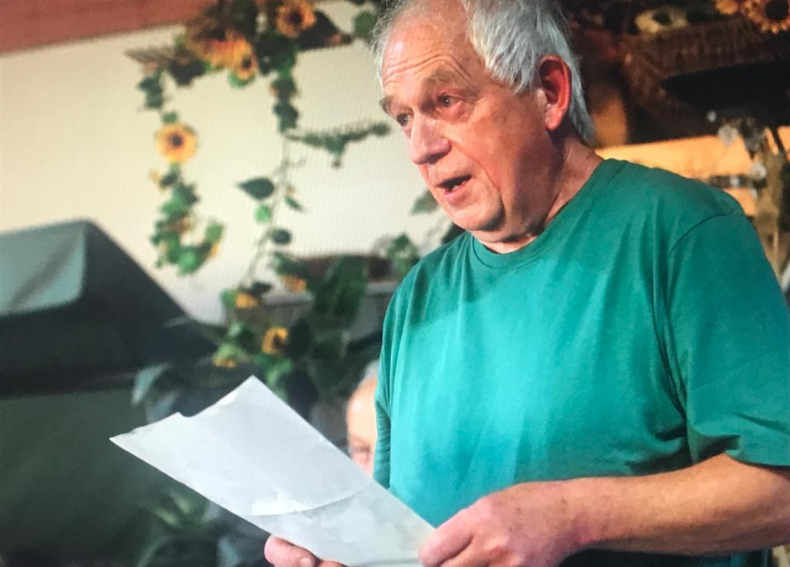

Rohr. Nachdem die vorangegangene Scheunenlesung Südthüringer Autoren schon drei Jahre zurückliegt, wagen Autorinnen und Autoren des Südthüringer Literaturvereins am Samstag, dem 13. August 2022, ab 19:00 Uhr im Stadel des Dreiseithofs von Familie König in der Hauptstraße 4 in Rohr eine Neuauflage. Unter dem Titel „Scheunensommer" bringen sie neue Texte zu Gehör.
Bei der vierten Auflage einer solchen Sommerlesung stehen wiederum leichte sommerliche Werke aus der eigenen Feder im Mittelpunkt. Mit von der Partie sind diesmal Iris Friebel mit ihrem Lokalvorteil, der Lyriker Harald Lindig aus Manebach, die Erzählerin Martina Anschütz aus Suhl, Dietmar Hörnig aus Breitungen mit seinen unverkennbar satirisch verfremdeten Arbeiten, zum ersten Mal Gerhard Goldmann aus Rudolstadt, der jüngst erst zum Verein stieß, Sandra und Sandro Eberwein aus Eckental und natürlich auch Literaturvereinschef Holger Uske aus Suhl. Im Mix aus Erzählungen, Gedichten und Liedern sollte für alle Literaturfreunde etwas dabei sein.
Der Abend ist Teil der Lesereihe 2022 des Vereins, die von der Thüringer Kulturstiftung gefördert wird. Der Eintritt beträgt 3 €, Schüler und Studenten ermäßigt 1,50 €.

